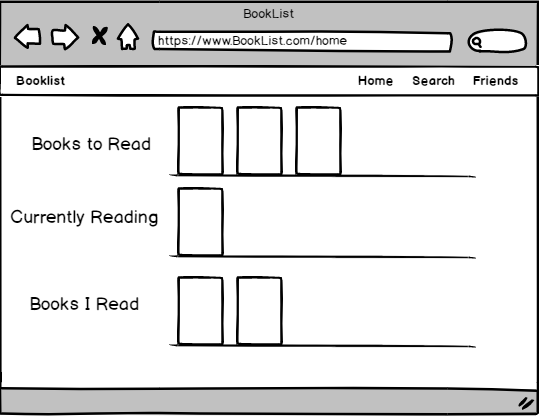
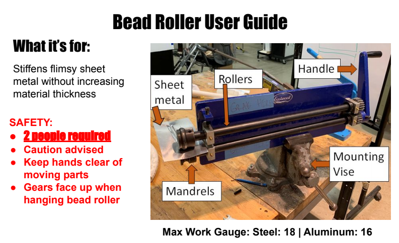
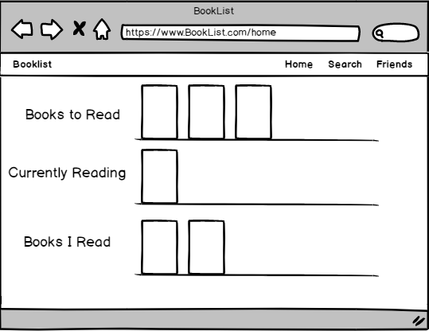
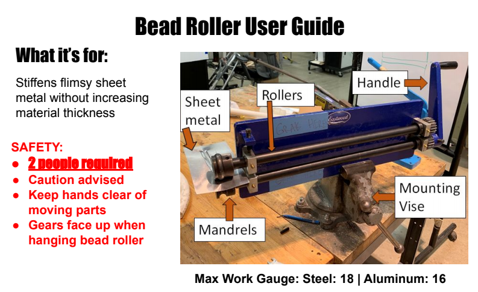

Projects
Web Design
BookList Wireframe
A usable online book club
Engineering Design
Bead Roller Integration
Making a tool usable for people
Projects
BookList Wireframe
A usable online book club
Bead Roller Integration
Making a tool usable for people
A wireframe prototype of an online book club website. The design focuses on a target audience that loves to read and discover books. See more.
The design is a means of making a bead roller, a shop tool used to deform metal, accessible to shop users. The design focuses on safety, storage, and communal access. See more.
Contact me at 832-859-3044 or gilbertoguadiana2022@u.northwestern.edu